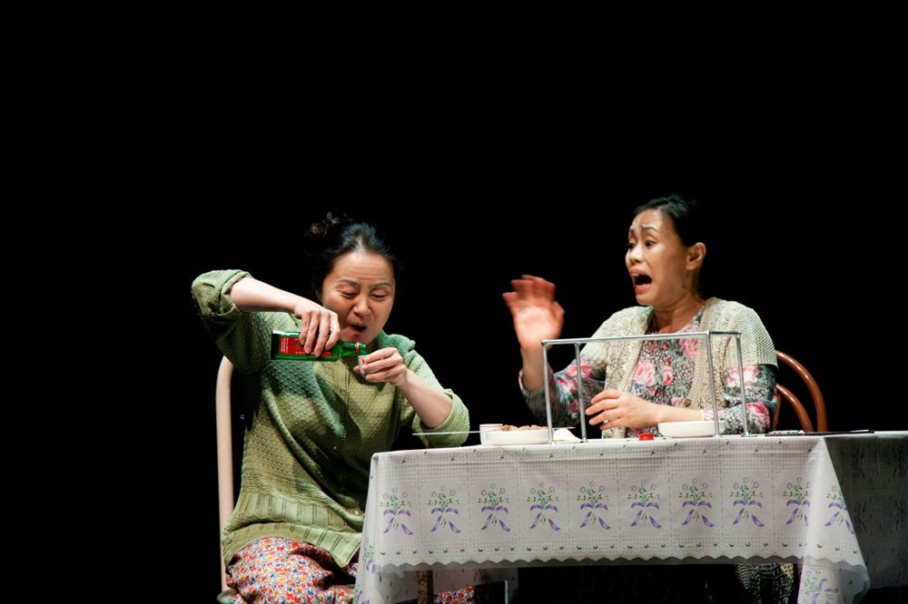

치매에 걸린 전직 육군 장성 전희복, 전투적으로 세상을 사는 아버지 전강돈, 딸의 의대 진학에 매달리는 어머니, 진보를 자처하는 아들, 프랑스에 가고 싶은 딸. 이들이 사는 고급 아파트에 연변에서 온 가정부 복길순이 들어온다. 그의 목표는 한국에서 소식이 끊긴 딸을 찾는 것과 다친 아들의 수술비를 버는 것. 한 가정과 그를 둘러싼 사회가 서로 닮아 있다는 데서 출발해, 두 개의 시계처럼 각각 파탄을 향해 가는 전씨 집안과 남한의 도시들을 그린다.
2011.5.27–6.12 / 대학로예술극장 대극장
작: 김은성
연출: 박상현
출연: 강애심, 김재건, 류태호, 서진, 김태윤, 노수산나, 신덕호, 이해성, 정은경, 서동갑, 이동영, 이철희, 강보람, 김다인, 김태훈, 김비비, 황미영, 이정호, 임기향, 박하늘
무대·소품: 손호성
조명디자인: 김창기
의상: 이유선
음악: 민경현
분장: 이동민
영상: 신성환
안무: 김수정
조안무: 김주희
무대감독: 김명환
연변말 지도: 마학봉
사진: 하정아
마케팅: 허정
그래픽디자인: 다홍디자인
조명 오퍼레이터: 김준원
음향 오퍼레이터: 곽동현
영상 오퍼레이터: 정지인
기획: 전성현
조연출: 송정안, 이필주
이전: 나는야쎅쓰왕 | 다음: 아무튼백석
아카이브로 돌아가기 | 아무 작품이나
발행일 2026.11.13